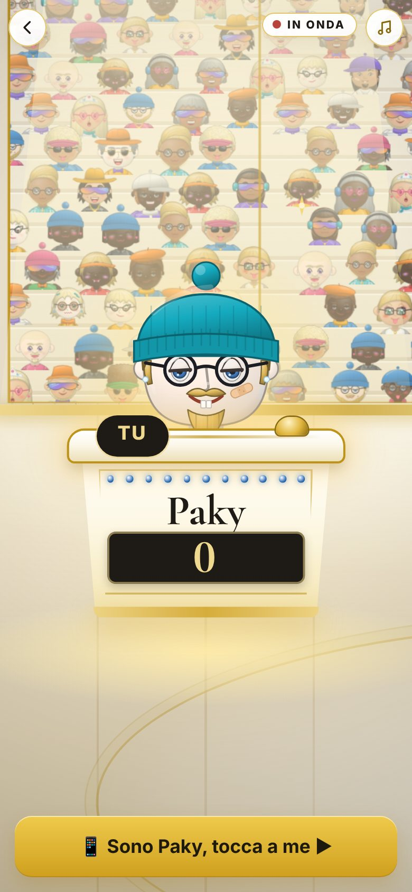
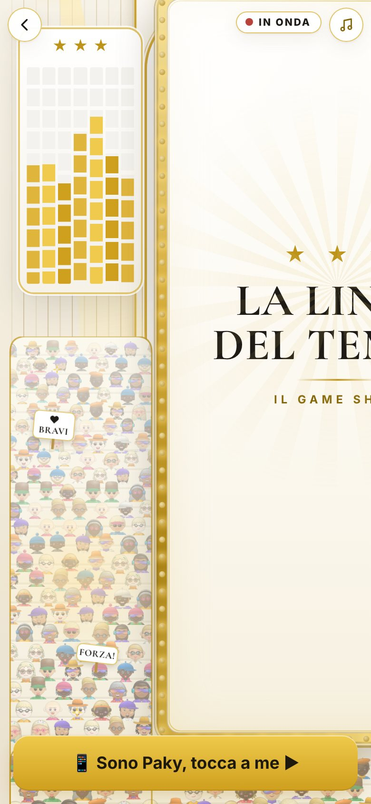
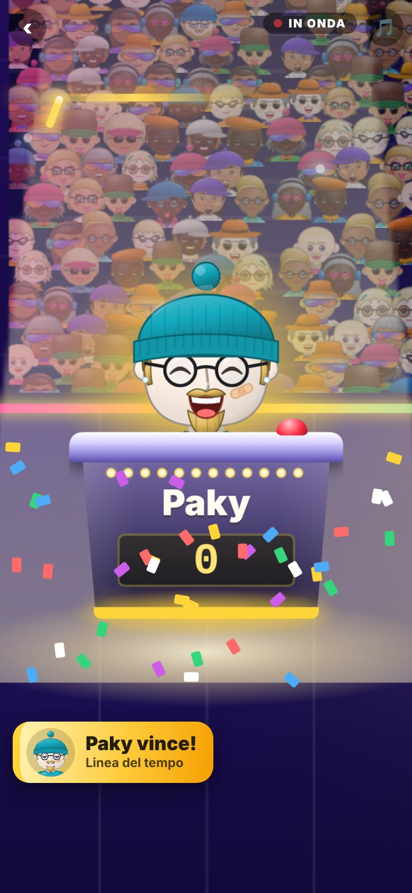
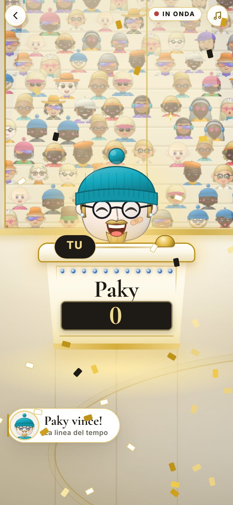

Lo studio TV, in Bianco e oro
È il set del game show che usano sette giochi: La Balla Colossale, Nomi Cose e Città, Parola d'ordine, La Patata Bollente, Il Prezzo è Giusto, La Ruota della Fortuna e La Linea del tempo. Oggi è un set viola con neon e fari colorati. Qui a sinistra c'è com'è oggi, a destra come diventerebbe.
Tutto lo studio


Pareti avorio e legno chiaro, il maxischermo con la cornice d'oro e le sue lampadine, luci calde al posto dei fari rosa e azzurri. Le gradinate sono di legno chiaro e il pubblico (sempre gli stessi mini avatar) è più piccolo e più chiaro in fondo, così non copre il resto. Il pavimento è un parquet chiaro con il filetto d'oro.
Un concorrente al suo bancone



Il bancone diventa avorio con il bordo d'oro. Il tabellino dei punti è nero caldo con i numeri d'oro (come l'orologio di un hotel di lusso). Il colore di ognuno resta, ma solo come fila di perle e striscia in basso. Quando tocca a lui, il concorrente si illumina con una luce calda e il resto dello studio si abbassa un po'.
Il pubblico



Spariscono i bastoncini luminosi di tutti i colori e le luci rosa e azzurre. Restano i cartelli («BRAVI», «WOW!»), che diventano bianchi con il filo d'oro, e al posto dei flash delle foto ci sono scintille d'oro. Il pubblico continua a ondeggiare e ad applaudire come adesso.
Il maxischermo
Qui c'è la scelta più importante, perché è lo schermo su cui ogni gioco mette le sue cose (carte, domande, prezzi). Ho fatto due versioni con la stessa carta della Linea del tempo.


Chiaro (lo consiglio): le carte e i testi si leggono come nel resto dell'app, e tutto il gioco resta bianco e oro dall'inizio alla fine. Scuro: sembra più uno schermo da televisione, con filetti d'oro, ma diventa l'unica parte nera dell'app: vicino alle schermate chiare di prima e di dopo si noterebbe il salto.
Chi vince




I coriandoli sono d'oro, d'avorio e neri (niente arcobaleno). La striscia con il nome del vincitore diventa una targhetta bianca con il filo d'oro e la scritta elegante. L'avatar esulta come prima.
Cosa resta vivo
Cambia solo come è colorato. Tutto quello che si muove e fa festa resta:
- La telecamera che stacca sul concorrente, sul pubblico, sul maxischermo e fa la panoramica: uguale a oggi.
- Il pubblico che ondeggia, salta e applaude, con i cartelli.
- I fari che girano piano sopra la sala: ora di luce calda, morbidi.
- Le lampadine attorno al maxischermo che si accendono a turno: ora perle d'oro.
- Le colonne luminose ai lati che ballano a tempo: ora a quadrettini d'oro.
- I flash delle foto del pubblico: ora scintille d'oro.
- I coriandoli, il lampo del vincitore, la scritta «IN ONDA» e la striscia col nome: ci sono tutti.
- Musica e applausi: non cambiano, e non cambia niente nelle regole dei giochi né nei tempi.
Per vedere come si muovono, apri il disegno dal vivo: tutto lo studio · il bancone · schermo chiaro · schermo scuro · chi vince.
Cosa devi scegliere
Il maxischermo: chiaro o scuro?
Io direi: chiaroIl pubblico: più piccolo e più chiaro (come nel disegno) o fitto e pieno come oggi? Fitto è più «stadio», ma è la parte che dà più confusione e appesantisce il telefono.
Io direi: come nel disegnoLe luci: tutte calde (come nel disegno) o vuoi tenere qualche tocco di colore (per esempio un fascio rosa e uno azzurro)?
Io direi: tutte caldeQuanto lavoro
Grande, ma una volta sola per sette giochi: circa una giornata di lavoro per rifare lo studio (è tutto in un solo posto). Poi ogni gioco sistema quello che mette sul maxischermo. I più semplici (La Linea del tempo, La Patata Bollente, La Balla Colossale, Nomi Cose e Città, Parola d'ordine) vengono quasi da soli; Il Prezzo è Giusto e La Ruota della Fortuna hanno schermi più ricchi (sipario, tabellone) e vanno rifatti uno per uno, dopo.
Per chi gioca, in tutto questo, non cambia niente: stessi giochi, stesse regole, stessi tempi. Cambia solo l'aspetto.
Per chi lavora al codice
- Si cambia solo
js/studio.js(lo sfondo disegnato su canvas, la cornice, i banconi, il pubblico, i coriandoli e i colori degli elementi che si muovono). La telecamera e la regia (apertura,stacco,finale) restano uguali. - I colori vanno presi dalle variabili
--o-*. Al legno chiaro servirebbero due variabili nuove (nel disegno:--legno,--legno-2,--legno-3, ottenute dall'oro chiaro stemperato nel fondo). - Il maxischermo chiaro vuole che i giochi mettano le loro carte con
tema: "oro"(o.orosulla radice del contenuto), come nelle altre schermate. - Il disegno è
docs/stile/proposte/studio-proposta.html: stessa pianta dello studio vero (un mondo largo il doppio dello schermo, inquadrato dalla telecamera), con gli avatar veri dijs/omino.js. Si sceglie l'inquadratura dopo il # dell'indirizzo. - Sui telefoni leggeri lo studio già spegne le luci che ballano: le luci calde e le scintille d'oro vanno nello stesso gruppo.